Nach Abschluss der Erfassungsarbeiten kann die Bearbeitung des Belegs im Fenster "Belege erfassen - Speichern" abgeschlossen werden.
Hinweis
Dieses Fenster wird nur geöffnet, wenn in der Belegerfassung mit alternativem Formular unter "Bearbeitung" die Option "4 - Auswahl" hinterlegt wurde.
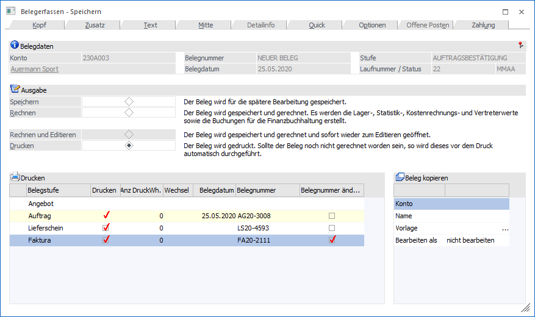
Das Fenster ist in die folgenden Bereiche untergliedert:
ü Ausgabe
ü Drucken
ü Beleg kopieren
ü Register
Ausgabe
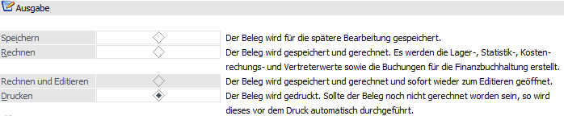
An dieser Stelle wird definiert, wie die Ausgabe des Belegs erfolgen soll.
Ø Speichern
Der Beleg wird lediglich gespeichert, es erfolgt aber keinerlei Rückschreibung von Daten in die Lagerbuchhaltung, Statistik, Vertreterabrechnung, Kostenrechnung oder Finanzbuchhaltung.
Hinweis
Es kann auch schon während der Erfassung der Beleg mit Shift+F5 zwischengespeichert werden.
Ø Rechnen
Nach Bestätigen der Option "Rechnen" wird der Beleg neu durchgerechnet und die Daten in der Datenbank zurückgeschrieben, d.h. alle an den Belegdruck angeschlossenen Bereiche upgedated.
Hinweis
Wird ein bereits gedruckter Auftrag nochmals gerechnet (nicht gedruckt), erfolgt eine Abfrage, ob der Beleg nochmals gedruckt werden soll:
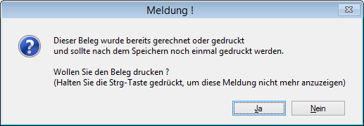
Die Meldung kann wahlweise mit "Ja" oder "Nein" bestätigt werden. Wird beim Anwahl des "Ja"- bzw. "Nein"-Buttons die STRG-Taste gedrückt, so wird die letzte Einstellung gespeichert und die Abfrage erscheint an diesem Arbeitsplatz nicht mehr. Im Hintergrund wird in der Datei MESONIC.INI der Eintrag
[Belegspeichern]
GerechneterBeleg=
ü 0 = Nein - Beleg wird nicht gedruckt
ü 1 = Ja - Beleg wird gedruckt
gesetzt. Wenn die Meldung wieder erscheinen soll, so muss dieser Eintrag gelöscht werden.
Ø Rechnen und Editieren
Diese Option kann nur dann verwendet werden, wenn ein Lieferschein erzeugt wird. Wenn diese Option gewählt wird, dann wird im Hintergrund der Lieferschein erzeugt und sofort zum Editieren nochmals geöffnet. Damit ist es möglich, im Lieferschein Informationen zu hinterlegen (z.B. ändern von Textbausteinen), die nicht in den ursprünglichen Auftrag zurückgeschrieben werden sollen.
In diesem Beleg können nur die Aktionen durchgeführt werden, die auch beim "normalen" Lieferschein-Editieren möglich sind (d.h. es können keine Mengenänderung bei HSL-Artikel durchgeführt werden, es kann kein Austausch von Ausprägungsartikel gemacht werden).
Ø Drucken
Wurde der Beleg noch nicht mit Rechnen in der Datenbank zurückgeschrieben, geschieht dies bei Bestätigen der Option "Drucken". Außerdem wird der Beleg natürlich auch auf dem entsprechenden Drucker ausgegeben.
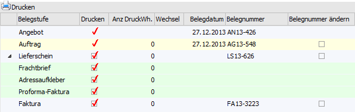
In der Tabelle "Drucken" kann bestimmt werden, was und wie gedruckt werden soll.
Achtung
Wird im Personenkontenstamm (Register "FAKT") die Option "e-Billing" genutzt, so wird für den Faktura-Druck der Hinweis "elektronischer Versand (keine Originaldruck)" ausgegeben. D.h. für diesen Beleg wird kein Originaldruck erzeugt. Es ist aber nach wie vor möglich, Kopien von diesem Beleg zu erzeugen.
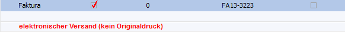
Ø Belegstufe
In der Stapel "Belegstufe" werden die einzelnen Belegstufen aufgeführt. Wenn lt. Belegart für eine Belegstufe "Belegformulare" oder "Artikelformulare" definiert wurden, so werden diese mit dem jeweiligen Formularnamen ebenfalls angezeigt.
Hinweis
Für eine bessere optische Trennung werden die aktuelle Belegstufe, die Belegformulare, die Artikelformulare und Fakturen mit e-Billing-Ausgabe farblich hinterlegt.
Ø Drucken
Bei Aktivierung dieser Checkbox, können automatisch auch die Folgestufen eines Beleges gedruckt werden. Der Folgestufendruck kann dabei nur durchgeführt werden, wenn die Folgestufe als Druckstatus ein "A" eingetragen hat und die vorherige Stufe abgearbeitet ist (Status "*" oder "D" - die aktuelle Belegstufe erhält einen dieser Statis beim Rechnen und / oder Drucken) oder nicht bearbeitet werden soll (Status "N").
Beispiel
ü Auftrag mit dem Status MMAA wird
gedruckt
Es muss zuerst die Stufe "Lieferschein" aktiviert werden, bevor die
Stufe "Faktura" aktiviert werden kann. Wenn beide Stufen aktiviert sind und die
Stufe "Lieferschein" wird wieder deaktiviert, so wird auch die Stufe "Faktura"
wieder deaktiviert.
ü Auftrag mit dem Status MMNA wird
gedruckt
Es kann die Stufe "Faktura" ohne den Lieferschein gedruckt
werden.
ü Auftrag mit dem Status MMMM wird
gedruckt
Es kann weder die Stufe "Lieferschein" noch die Stufe "Faktura"
gedruckt werden, da beide den Belegstatus "M" für manuelle Druckfreigabe
haben.
Des Weiteren spielt die Einstellung bei der Option "Folgestufendruck" in der verwendeten Belegart (Register "Ausdruck") eine Rolle.
ü 0 - immer ermöglichen
Beim
Druck des Beleges (im Register "Belegerfassen - Speichern" bzw. "Telesales -
Speichern") ist es möglich, auch die Folgestufe drucken zu lassen, wenn der
Beleg in der Folgestufe als Belegstatus ein A für "automatisch" eingetragen
hat.
ü 1 - immer drucken
Beim Druck
des Beleges (im Register "Belegerfassen - Speichern" bzw. "Telesales -
Speichern") wird automatisch vorgeschlagen, auch die Folgestufen drucken zu
lassen, wenn der Beleg in der Folgestufe als Belegstatus ein A für "automatisch"
eingetragen hat.
ü 2 - nie drucken
Es ist nicht
möglich die Folgestufe eines Beleges (im Register "Belegerfassen - Speichern"
bzw. "Telesales - Speichern") drucken zu lassen.
Zusätzlich kann über die Checkbox entschieden werden, ob in der Belegart definierte "Belegformulare" und "Artikelformulare" ausgegeben werden sollen.
Beispiel
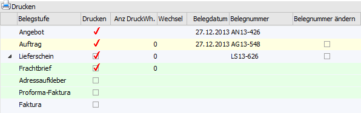
Neben dem Auftrag (aktuelle Belegstufe) soll auch der zugehörige Lieferschein erzeugt werden. Von den Belegformularen, welche bei der Belegstufe "Lieferschein" definiert wurden, soll nur der "Frachtbrief" ausgegeben werden.
Ø Anz DruckWh.
Hier kann die Anzahl der Druckwiederholungen, welche neben dem Originaldruck ebenfalls ausgegeben werden sollen, eingetragen werden.
Dieses ist für das Belegstufenformular der jeweiligen Belegstufe nur möglich, wenn in der Belegart die Option "Druckwiederholung" (Register "Ausdruck") auf "0 - immer ermöglich" gestellt wurde. Bei zusätzlichen Artikel- bzw. Belegformularen kann an dieser Stelle immer die Anzahl hinterlegt werden.
Hinweis
Bei Artikel- bzw. Belegformularen symbolisiert ein in der Spalte "Anz DruckWh.", dass dieses so oft gedruckt werden soll, wie es bei dem zugehörigen Belegstufenformular definiert wurde.
Ø Wechsel
Wenn eine Druckwiederholung (siehe Spalte "Anz DruckWh.") eingetragen wird, kann an dieser Stelle eine Checkbox aktiviert werden. Dieses bedeutet, dass bei jedem Druck der Drucker-Dialog aufgeht und ein anderer Drucker ausgewählt werden kann.
Ø Belegdatum
Hier wird das aktuelle Datum aus dem Belegkopf angezeigt, welches aber noch editiert werden kann.
Ø Belegnummer
Es wird die nächste fortlaufende Belegnummer aus der Belegart angezeigt, welche beim Druck des Beleges vergeben werden würde. Wenn die Checkbox "Belegnummer ändern" aktiviert ist, kann die Belegnummer editiert werden. Wird hier eine Belegnummer vergeben, die sich bereits im System befindet, wird eine entsprechende Warnung ausgegeben. Die Prüfung auf bereits vorhandene Lieferschein- bzw. Rechnungsnummern erfolgt getrennt nach Ein- und Verkauf.
Beispiel
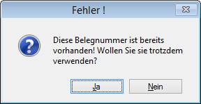
Ø Belegnummer ändern
Durch die Aktivierung dieser Checkbox kann in der Spalte "Belegnummer" die Nummer editiert werden.
Beleg kopieren
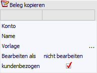
Mit dieser Funktion kann jener Beleg, welcher ausgedruckt wird, gleichzeitig auf ein weiteres Personenkonto kopiert werden.
Ø Konto
Um den Beleg auf ein weiteres Personenkonto kopieren zu können muss in diesem Feld das entsprechende Personenkonto angegeben werden.
Ø Name
In diesem Feld wird jener Kontoname angezeigt, welchem beim angegebenen Konto (Feld "Konto") hinterlegt wurde.
Ø Vorlage
Über die Belegvorlage können Werte aus der "Bestelldatei Kopf" sowie aus der "Bestelldatei Mitte" für den neu zu erstellenden (kopierten) Beleg "vordefiniert" werden. D.h. es werden nicht die Werte aus dem Basisbeleg verwendet, sondern jene, die in der Vorlage angegeben werden.
Hinweis
Über die Belegart (Register "Ausdruck" - Einstellung "Belegvorlage"), kann dieses Feld vorbelegt, jedoch im einzelnen Fall manuell übersteuert werden.
Ø Bearbeiten als
Nachdem der Beleg kopiert wurde kann dieser in einer anzugebenden Belegstufe automatisch aufgerufen werden.
Hierzu kann dieses Feld über die Belegart (Register "Ausdruck" - Option "Beleg bearbeiten als") bereits vorbelegt, im einzelnen Fall jedoch manuell übersteuert werden. Zur Auswahl stehen hier:
ü nicht bearbeiten
Der Beleg wird
kopiert, jedoch keine weitere Aktion durchgeführt.
ü Angebot, Auftrag, Lieferschein,
Faktura
Der Beleg wird nach dem Kopieren in der angegebenen Belegstufe zur
weiteren Bearbeitung geöffnet.
Ø kundenbezogen
Diese Option kann nur dann bearbeitet werden, wenn ein Kundenauftrag auf einen Lieferanten kopiert werden soll. Wird diese Option aktiviert, so werden die Kundennummer, die Laufnummer und die Auftragsnummer des Kundenbeleges in den Lieferantenbeleg übernommen. Beim Liefereingang wird dann die Liefermenge in den Kundenbeleg zurückgeschrieben und das Packzettelkennzeichen gesetzt, so dass der Kundenauftrag ohne weitere Bearbeitung im Menüpunkt "Kundenlieferscheine drucken" ausgegeben werden kann.
Hinweis 1
Die Informationen der Kundenkontonummer sowie der Kundenauftragsnummer werden im neu erstellten Beleg im OIF-Bereich angezeigt.
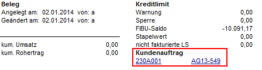
Hinweis 2
Sind im "Quellbeleg" Archivdokumente zugeordnet (durch Drag & Drop in den Belegkopf), so werden diese auch in den "Zielbeleg" kopiert.
Register
Ø Register "Beleg"
Durch Anwahl des Registers kann in die Belegbearbeitung zurückgekehrt werden.
Tabellenbuttons
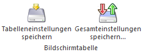
Ø Tabelleneinstellungen speichern
Die Spalten einer Tabelle können grundsätzlich an beliebige Positionen verschoben, bzw. in der Breite entsprechend angepasst werden. Durch Anwahl des Buttons "Tabelleneinstellungen speichern" werden die Einstellungen benutzerspezifisch gespeichert und bei dem nächsten Aufruf des Programmpunktes wieder vorgeschlagen.
Ø Gesamteinstellungen speichern
Im Gegensatz zu "Tabelleneinstellungen speichern" können mit "Gesamteinstellungen speichern" mehrere Tabellenaufbauten gespeichert und nach Wunsch geladen werden. Zusätzlich werden Sonderfunktionen der Tabelle (z.B. "Spalte gruppieren") ebenfalls bei der Speicherung bedacht.
Buttons
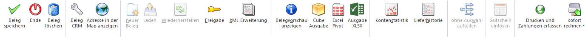
Ø Beleg speichern
Durch Anwahl des Buttons "Beleg speichern" bzw. der Taste F5 wird der Beleg gespeichert, gerechnet und / oder gedruckt (je nach Art der Ausgabe).
Achtung
Nach der Anwahl des Buttons "Beleg speichern" bleibt das "Beleg Speichern"-Fenster geöffnet, wenn lt. Belegart eine Druckwiederholung und / oder ein Folgestufendruck erlaubt ist. Hierbei werden alle Buttons deaktiviert, ausgenommen dem "Beleg speichern"- und dem "Ende"-Button (hierüber erfolgt auch wieder der Wechsel in das Hauptfenster der Belegerfassung).
Sollte eine Druckwiederholung und / oder ein Folgestufendruck lt. Belegart nicht erlaubt sein, dann wechselt WinLine automatisch in das Hauptfenster der Belegerfassung.
Beispiele
Bei folgenden Belegarteneinstellungen und Belegstufen bzw. -statis wird automatisch in das Hauptfenster gewechselt:
ü Druck eines Auftrags mit den Einstellungen "Druckwiederholung = 1 - nie ermöglichen" und "Folgestufendruck = 2 - nie drucken"
ü Druck einer Faktura mit der Einstellung "Druckwiederholung = 1 - nie ermöglichen"
ü Druck eines Lieferscheines mit der Einstellung "Druckwiederholung = 1- nie ermöglichen" und dem Status "S" in der Belegstufe Faktura.
Ø Ende
Mit dem "Ende"-Button wird grundsätzlich das Fenster geschlossen und alle getätigten Eingaben (nach einer Abfrage) verworfen.
Sollte der Beleg bereits per Anwahl des Buttons "Beleg speichern" gespeichert, gerechnet und / oder gedruckt worden sein und man sich aufgrund der Belegarteneinstellungen weiterhin in dem Speichern-Fenster befindet, kann durch den "Ende"-Button in das Hauptfenster der Belegerfassung gewechselt werden.
Ø Beleg löschen
Durch Anklicken des "Löschen"-Buttons wird der Beleg gelöscht bzw. storniert (nähere Informationen bezüglich des Stornierens eines Belegs entnehmen Sie bitte dem WinLine FAKT2-Handbuch, Kapitel "Beleg stornieren").
Ø Beleg CRM
Mit Hilfe des Buttons "Beleg CRM" kann in das Fenster "Belege - CRM-Ansicht" gewechselt werden. Dort ist es möglich bestehende CRM-Fälle des Belegs zu betrachten, neue Fälle zu erfassen oder bestehende Fälle mit dem Beleg zu verknüpfen bzw. die Verknüfpungen zu entfernen.
Ø Adresse in der Map anzeigen
Durch Anwahl des Buttons "Google Maps" wird im Standard-Browser Google Maps geladen und als Suchanschrift die Daten des Personenkontos vorbelegt.
Ø Freigabe
Durch Anklicken des "Freigabe"-Buttons kann der Freigabestatus des Belegs verändert werden.
Ø XML-Erweiterung
Über den Button "XML-Erweiterung" können zusätzliche Informationen zum Beleg in einer XML-Struktur erfasst werden (nähere Informationen hierzu entnehmen Sie bitte dem Kapitel "XML-Erweiterung").
Ø Belegvorschau
Durch Anklicken des "Belegvorschau"-Buttons kann der Beleg in einer Belegvorschau angesehen werden.
Ø Cube Ausgabe
Durch Anwahl des Buttons "Cube Ausgabe" werden die erfassten Belegzeilen in Form einer Cube-Ansicht angezeigt. Hierbei werden nur Zeilen des Typs 1 (Artikel) und 6 (Gutschrift) berücksichtigt.
Hinweis
Alternativpositionen (Hinterlegung 1 bis 9 in der Spalte "Alternativposition") werden ebenfalls nicht angezeigt.
Ø BI Ausgabe
Durch Anwahl des Buttons "BI Ausgabe" werden die erfassten Belegzeilen in Form einer BI Ausgabe in Microsoft Excel (2007 oder höher) angezeigt. Hierbei werden nur Zeilen des Typs 1 (Artikel) und 6 (Gutschrift) berücksichtigt.
Hinweis
Alternativpositionen (Hinterlegung 1 bis 9 in der Spalte "Alternativposition") werden ebenfalls nicht angezeigt.
Ø Kontenstatistik
Durch Anwahl des Buttons "Statistik" erhalten Sie eine Übersicht über die Verkaufszahlen der letzten 3 Jahre. Diese Übersicht kann auch in detaillierter Form ausgegeben werden.
Ø Lieferhistorie
Durch Anwahl des Button "Lieferhistorie" werden die bisherigen Lieferungen des aktiven Personenkontos anzeigt.
Ø Drucken und Zahlungen erfassen
Durch Anwahl dieses Buttons wird der Beleg gedruckt und im Anschluss daran können Zahlungen zu diesem Beleg erfasst werden.
Ø Hintergrunddruck
Wenn dieser Button angewählt wird, können verschiedene Optionen gewählt werden, was mit dem Beleg beim Belegdruck passieren soll. Details dazu können dem Kapitel Hintergrunddruck entnommen werden.